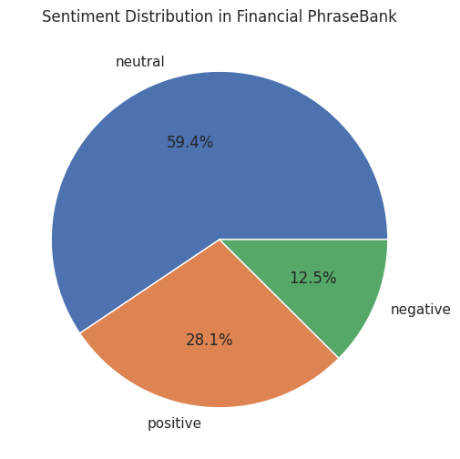
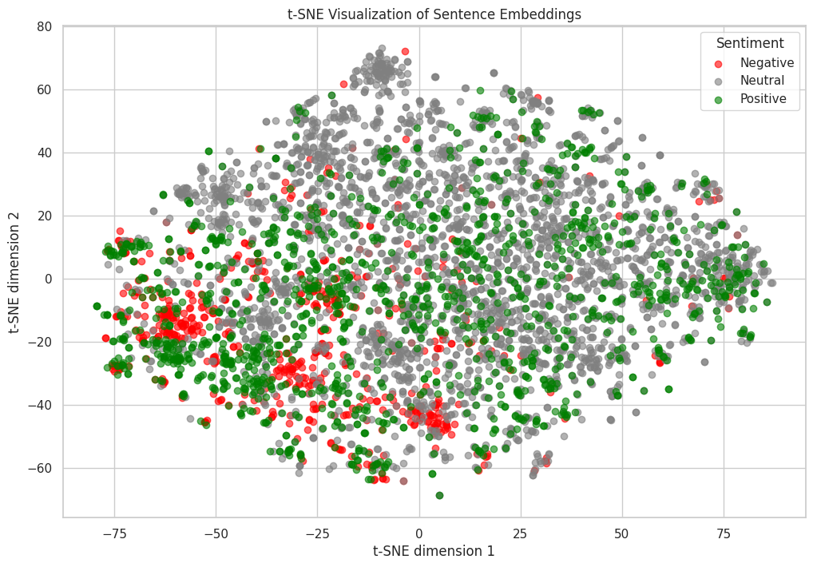
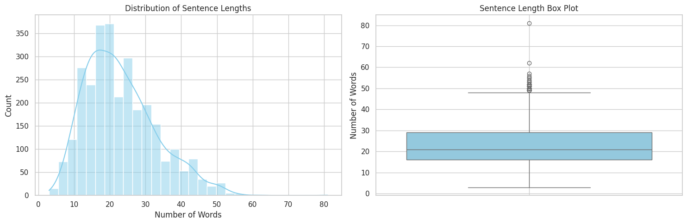
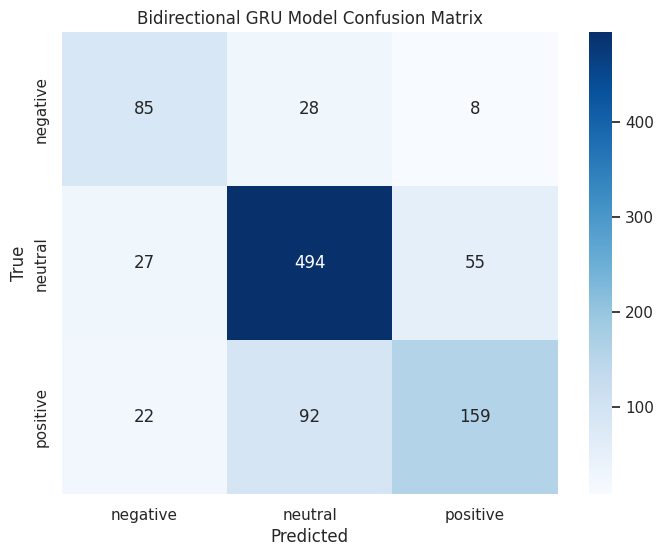
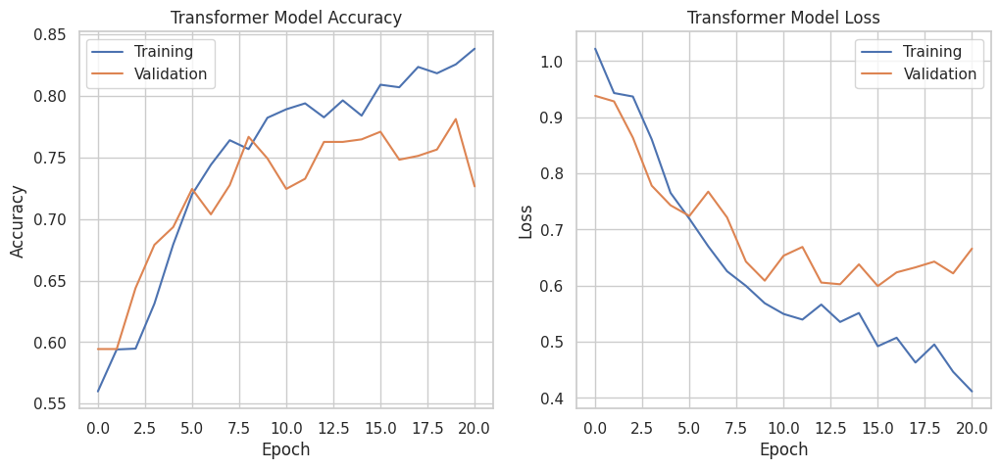
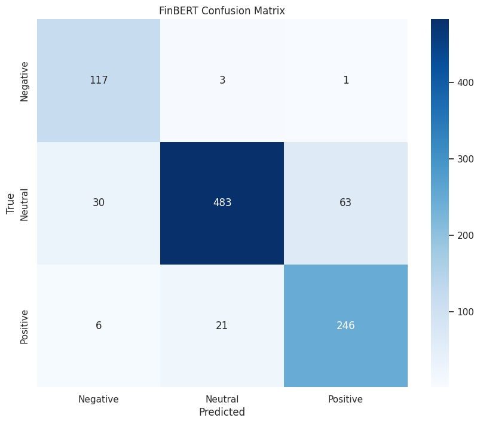

# Import required libraries
import numpy as np
import pandas as pd
import matplotlib.pyplot as plt
import seaborn as sns
from sklearn.model_selection import train_test_split
from sklearn.metrics import classification_report, confusion_matrix
from transformers import AutoTokenizer, AutoModel, BertTokenizerFast, BertModel, AutoModelForSequenceClassification
from sentence_transformers import SentenceTransformer
import xgboost as xgb
import datasets
import keras
import torch
sns.set_theme(style="whitegrid")
import warnings
warnings.filterwarnings('ignore', category=UserWarning, module='tensorflow')
# Keras imports
from keras.layers import Dense, Dropout, GRU, Bidirectional, MultiHeadAttention, LayerNormalization, GlobalAveragePooling1D, Add
from keras.optimizers import Adam
from keras.callbacks import EarlyStoppingIntroduction
This notebook demonstrates various approaches to financial sentiment analysis using the Financial PhraseBank dataset. We explore multiple machine learning and deep learning techniques, progressing from basic to advanced methods:
- Traditional ML with embeddings
- Multi-layer Perceptron (MLP)
- XGBoost (Gradient Boosting)
- Sequential Models
- Gated Recurrent Unit
- Bidirectional Gated RNNs
- Transformer Architecture
- Modern Approaches
- Pre-trained FinBERT
Each section includes implementation, evaluation metrics, and performance comparison. By the end of this notebook, you’ll understand the trade-offs between different approaches to sentiment analysis.
Setup and Requirements
This notebook requires the following packages:
- transformers (4.30+)
- datasets (2.10+)
- nltk (3.8+)
- xgboost (2.0+)
- sentence_transformers (2.2+)
- keras (3.0+)
- torch (2.0+)
We’ll first set up our environment and configure the backend (TensorFlow or PyTorch) based on the operating system.
import platform
import os
# Check operating system
is_macos = platform.system() == 'Darwin'
if is_macos:
# For MacOS, use TensorFlow backend
os.environ['KERAS_BACKEND'] = 'tensorflow'
import tensorflow as tf
print("Using TensorFlow backend on MacOS")
device = '/GPU:0' if tf.config.list_physical_devices('GPU') else '/CPU:0'
else:
# For other OS, use PyTorch backend
os.environ['KERAS_BACKEND'] = 'torch'
import torch
print("Using PyTorch backend")
device = 'cuda' if torch.cuda.is_available() else 'cpu'
print(f"Using device: {device}")Using PyTorch backend
Using device: cudaDataset Description
The Financial PhraseBank dataset is a comprehensive collection of financial texts with sentiment annotations:
- Size: 4,840 sentences from English financial news articles
- Labels: Three-class sentiment classification (positive, negative, neutral)
- Annotation: 5-8 annotators per sentence with varying agreement levels
- Source: News articles about OMX Helsinki-listed companies
- Annotators: Finance experts (researchers and master’s students from Aalto University)
Importance
The dataset addresses the scarcity of high-quality annotated data in financial sentiment analysis, providing a benchmark for model evaluation. The annotations are particularly valuable as they come from individuals with domain expertise in finance.
Dataset Variants
The dataset offers different versions based on annotator agreement: - 50% agreement (used in this notebook) - 66% agreement - 75% agreement - 100% agreement
Data Loading, Inspection, and Preprocessing
# Load and preprocess the dataset
def load_financial_phrasebank():
"""
Load and preprocess the Financial PhraseBank dataset from Hugging Face.
Returns:
pd.DataFrame: Processed dataset with text and sentiment columns
"""
# Load dataset from Hugging Face
data = pd.read_csv("/content/financial_phrasebank_50agree.csv")
# Convert to pandas DataFrame
# Map numerical labels to text labels
data['sentiment'] = data['label'].map({0: 'negative', 1: 'neutral', 2: 'positive'})
# Rename sentence column to text for consistency
data = data.rename(columns={'sentence': 'text'})
# Display basic information about the dataset
print("Dataset Shape:", data.shape)
print("\nSample entries:")
display(data.head())
# Show class distribution
print("\nSentiment Distribution:")
sentiment_dist = data['sentiment'].value_counts(normalize=True)
print(sentiment_dist.round(3))
# Create a pie chart of sentiment distribution
plt.figure(figsize=(10, 6))
plt.pie(sentiment_dist.values, labels=sentiment_dist.index, autopct='%1.1f%%')
plt.title('Sentiment Distribution in Financial PhraseBank')
plt.show()
return data
# Load the dataset
print("Loading Financial PhraseBank dataset from Hugging Face...")
data = load_financial_phrasebank()Loading Financial PhraseBank dataset from Hugging Face...
Dataset Shape: (4846, 3)
Sample entries:
Sentiment Distribution:
sentiment
neutral 0.594
positive 0.281
negative 0.125
Name: proportion, dtype: float64| text | label | sentiment | |
|---|---|---|---|
| 0 | According to Gran , the company has no plans t... | 1 | neutral |
| 1 | Technopolis plans to develop in stages an area... | 1 | neutral |
| 2 | The international electronic industry company ... | 0 | negative |
| 3 | With the new production plant the company woul... | 2 | positive |
| 4 | According to the company 's updated strategy f... | 2 | positive |

Data Splitting
The dataset doesn’t come with a predefined train/validation/test split, so we’ll create our own using an 80/10/10 split ratio.
# Create train/validation/test splits
from sklearn.preprocessing import LabelEncoder
def prepare_data_splits(data, test_size=0.2, val_size=0.25, random_state=42):
"""
Prepare data splits and encode labels.
Args:
data (pd.DataFrame): Input dataset
test_size (float): Proportion of data for testing
val_size (float): Proportion of training data for validation
random_state (int): Random seed for reproducibility
Returns:
tuple: (X_train, X_val, X_test, y_train, y_val, y_test)
"""
# Encode labels
le = LabelEncoder()
y = le.fit_transform(data['sentiment'])
# First split: training + validation vs test
X_temp, X_test, y_temp, y_test = train_test_split(
data['text'].values,
y,
test_size=test_size,
random_state=random_state,
stratify=y
)
# Second split: training vs validation
X_train, X_val, y_train, y_val = train_test_split(
X_temp,
y_temp,
test_size=val_size,
random_state=random_state,
stratify=y_temp
)
print("Data split sizes:")
print(f"Training: {len(X_train)} samples")
print(f"Validation: {len(X_val)} samples")
print(f"Test: {len(X_test)} samples")
return X_train, X_val, X_test, y_train, y_val, y_test
# Create data splits
X_train, X_val, X_test, y_train, y_val, y_test = prepare_data_splits(data)Data split sizes:
Training: 2907 samples
Validation: 969 samples
Test: 970 samplesData Modeling
To address the sentiment analysis task using machine learning, we employ modern approaches that leverage text embeddings — a cornerstone technique in deep learning–based natural language processing.
In this notebook, we explore three complementary modeling directions:
Sentence-level embeddings
Each sentence is encoded into a fixed-size vector (e.g., 384 dimensions).
These embeddings are used as input features for traditional machine learning classifiers such as MLP and XGBoost.Token-level embeddings with sequence models
Texts are tokenized into individual tokens, each represented as an embedding vector forming a sequence.
Sequence models such as RNN-based architectures and Transformers are then employed to capture temporal and contextual dependencies within the text.Pretrained sentiment models (inference only)
We also apply pretrained sentiment analysis models, such as FinBERT, directly to the test data without additional training.
This approach allows us to benchmark performance against state-of-the-art, domain-specific models trained on large financial text corpora.
Sentence and Word Embeddings Using SentenceTransformers
SentenceTransformers is a powerful library that provides state-of-the-art pretrained models for generating text embeddings.
In this section, we use it for two complementary purposes:
- Sentence-level embeddings
- Convert each full sentence into a fixed-length vector (384 dimensions).
- Capture the semantic meaning of complete financial statements.
- Serve as input features for traditional machine learning models such as XGBoost and MLP.
- Convert each full sentence into a fixed-length vector (384 dimensions).
- Word-level embeddings
- Generate embeddings for individual tokens within each sentence.
- Preserve sequential and contextual information for deep learning models.
- Used as input for GRU, LSTM, and Transformer architectures.
- Generate embeddings for individual tokens within each sentence.
Model Details
- Base model:
all-MiniLM-L6-v2
- Embedding dimension: 384
- Advantages:
- Fast inference time
- Strong semantic performance on financial text
- Memory efficient and lightweight
- Fast inference time
These embeddings form the foundation for all classification models developed in this notebook.
Next, we’ll load the SentenceTransformer model and ensure it runs on the appropriate compute device (CPU or GPU).
# Load SentenceTransformer model with appropriate device placement
try:
from sentence_transformers import SentenceTransformer
embedding_model = SentenceTransformer("all-MiniLM-L6-v2")
# Handle device placement based on backend
if is_macos:
with tf.device(device):
model = embedding_model
else:
model = embedding_model.to(device)
print("Embedding model loaded successfully")
except Exception as e:
print(f"Error loading embedding model: {e}")/usr/local/lib/python3.12/dist-packages/huggingface_hub/utils/_auth.py:94: UserWarning:
The secret `HF_TOKEN` does not exist in your Colab secrets.
To authenticate with the Hugging Face Hub, create a token in your settings tab (https://huggingface.co/settings/tokens), set it as secret in your Google Colab and restart your session.
You will be able to reuse this secret in all of your notebooks.
Please note that authentication is recommended but still optional to access public models or datasets.
warnings.warn(Embedding model loaded successfullyTraditional Models with Sentence-Level Embeddings
In this section, we implement and evaluate traditional machine learning models using the generated sentence embeddings.
Generating Sentence Embeddings
# Generate sentence embeddings for train, validation, and test sets
print("Generating sentence embeddings for all splits...")
# Generate embeddings for each split
X_train_emb = embedding_model.encode(
X_train,
batch_size=32,
show_progress_bar=True,
convert_to_numpy=True
)
X_val_emb = embedding_model.encode(
X_val,
batch_size=32,
show_progress_bar=True,
convert_to_numpy=True
)
X_test_emb = embedding_model.encode(
X_test,
batch_size=32,
show_progress_bar=True,
convert_to_numpy=True
)
print("\nEmbedding shapes:")
print(f"Training: {X_train_emb.shape}")
print(f"Validation: {X_val_emb.shape}")
print(f"Test: {X_test_emb.shape}")
print(f"\nEach sentence is represented by a {X_train_emb.shape[1]}-dimensional vector")Generating sentence embeddings for all splits...
Embedding shapes:
Training: (2907, 384)
Validation: (969, 384)
Test: (970, 384)
Each sentence is represented by a 384-dimensional vectorLet’s visualize the sentence embeddings using t-SNE, a dimensionality reduction technique for visualization that you’ll learn in the Unsupervised Learning module.
# Visualize embeddings using t-SNE
from sklearn.manifold import TSNE
# Combine embeddings and labels for visualization
all_embeddings = np.vstack([X_train_emb, X_val_emb, X_test_emb])
all_labels = np.concatenate([y_train, y_val, y_test])
# Reduce dimensionality to 2D using t-SNE
print("Reducing dimensionality with t-SNE...")
tsne = TSNE(n_components=2, random_state=42)
embeddings_2d = tsne.fit_transform(all_embeddings)
# Create scatter plot with discrete colors
plt.figure(figsize=(12, 8))
# Define colors and labels for each sentiment
colors = ['red', 'gray', 'green']
sentiments = ['Negative', 'Neutral', 'Positive']
for i, (color, sentiment) in enumerate(zip(colors, sentiments)):
mask = all_labels == i
plt.scatter(embeddings_2d[mask, 0], embeddings_2d[mask, 1],
c=color, label=sentiment, alpha=0.6)
plt.title('t-SNE Visualization of Sentence Embeddings')
plt.xlabel('t-SNE dimension 1')
plt.ylabel('t-SNE dimension 2')
plt.legend(title='Sentiment')
plt.grid(True)
plt.show()Reducing dimensionality with t-SNE...
Task 1: MLP for sentiment classification
Construct a feed-forward neural network that achieves a test accuracy of at least 74.5%
from keras.models import Sequential
from keras.layers import Dense, Dropout
from keras.optimizers import Adam
from keras.callbacks import EarlyStopping
# 1. Instantiate a Sequential model
mlp_model = Sequential()
mlp_model.add(Dense(128, activation='relu', input_shape=(X_train_emb.shape[1],)))
mlp_model.add(Dropout(0.3))
mlp_model.add(Dense(64, activation='relu'))
mlp_model.add(Dense(3, activation='softmax'))
# 7. Compile the model
mlp_model.compile(
optimizer=Adam(learning_rate=0.001),
loss='sparse_categorical_crossentropy',
metrics=['accuracy']
)
# Print model summary
print("MLP Model Summary:")
mlp_model.summary()
# 8. Define an EarlyStopping callback
early_stopping = EarlyStopping(
monitor='val_loss',
patience=5,
restore_best_weights=True,
verbose=1
)
# 9. Train the model
print("\nTraining MLP model...")
history_mlp = mlp_model.fit(
X_train_emb,
y_train,
batch_size=32,
epochs=50,
validation_data=(X_val_emb, y_val),
callbacks=[early_stopping],
verbose=1
)
print("MLP model training complete.")MLP Model Summary:
Training MLP model...
Epoch 1/50
91/91 ━━━━━━━━━━━━━━━━━━━━ 4s 21ms/step - accuracy: 0.6008 - loss: 0.9208 - val_accuracy: 0.7296 - val_loss: 0.6578
Epoch 2/50
91/91 ━━━━━━━━━━━━━━━━━━━━ 0s 3ms/step - accuracy: 0.7445 - loss: 0.6048 - val_accuracy: 0.7606 - val_loss: 0.5543
Epoch 3/50
91/91 ━━━━━━━━━━━━━━━━━━━━ 0s 4ms/step - accuracy: 0.7997 - loss: 0.4731 - val_accuracy: 0.7637 - val_loss: 0.5414
Epoch 4/50
91/91 ━━━━━━━━━━━━━━━━━━━━ 0s 4ms/step - accuracy: 0.8356 - loss: 0.4198 - val_accuracy: 0.7688 - val_loss: 0.5417
Epoch 5/50
91/91 ━━━━━━━━━━━━━━━━━━━━ 0s 3ms/step - accuracy: 0.8298 - loss: 0.4074 - val_accuracy: 0.7781 - val_loss: 0.5480
Epoch 6/50
91/91 ━━━━━━━━━━━━━━━━━━━━ 0s 3ms/step - accuracy: 0.8631 - loss: 0.3466 - val_accuracy: 0.7595 - val_loss: 0.5743
Epoch 7/50
91/91 ━━━━━━━━━━━━━━━━━━━━ 0s 4ms/step - accuracy: 0.8816 - loss: 0.3072 - val_accuracy: 0.7833 - val_loss: 0.5658
Epoch 8/50
91/91 ━━━━━━━━━━━━━━━━━━━━ 0s 3ms/step - accuracy: 0.9076 - loss: 0.2644 - val_accuracy: 0.7719 - val_loss: 0.5814
Epoch 8: early stopping
Restoring model weights from the end of the best epoch: 3.
MLP model training complete.Model: "sequential_9"
┏━━━━━━━━━━━━━━━━━━━━━━━━━━━━━━━━━┳━━━━━━━━━━━━━━━━━━━━━━━━┳━━━━━━━━━━━━━━━┓ ┃ Layer (type) ┃ Output Shape ┃ Param # ┃ ┡━━━━━━━━━━━━━━━━━━━━━━━━━━━━━━━━━╇━━━━━━━━━━━━━━━━━━━━━━━━╇━━━━━━━━━━━━━━━┩ │ dense_25 (Dense) │ (None, 128) │ 49,280 │ ├─────────────────────────────────┼────────────────────────┼───────────────┤ │ dropout_15 (Dropout) │ (None, 128) │ 0 │ ├─────────────────────────────────┼────────────────────────┼───────────────┤ │ dense_26 (Dense) │ (None, 64) │ 8,256 │ ├─────────────────────────────────┼────────────────────────┼───────────────┤ │ dense_27 (Dense) │ (None, 3) │ 195 │ └─────────────────────────────────┴────────────────────────┴───────────────┘
Total params: 57,731 (225.51 KB)
Trainable params: 57,731 (225.51 KB)
Non-trainable params: 0 (0.00 B)
#Now evaluate on the test set
print("\nEvaluating on test set...")
test_loss, test_accuracy = mlp_model.evaluate(X_test_emb, y_test, verbose=0)
print(
f"Test Loss: {test_loss:.4f}\n"
f"Test Accuracy: {test_accuracy:.4f}"
)
Evaluating on test set...
Test Loss: 0.5479
Test Accuracy: 0.7711Task 2: Gradient Boosted Trees for Multiclass Classification
Explore optimized gradient boosting algorithms — XGBoost, LightGBM, or CatBoost — to build a model that achieves performance comparable to the MLP model.
from xgboost import XGBClassifier
from sklearn.metrics import classification_report, accuracy_score
import matplotlib.pyplot as plt
import seaborn as sns
# XGB classifier
xgb_model = XGBClassifier(
objective='multi:softmax', # For multiclass classification with direct class labels
num_class=3, # Number of unique classes
eval_metric='mlogloss', # Evaluation metric for multiclass logloss
use_label_encoder=False, # Suppress deprecation warning
random_state=42 # For reproducibility
)
#Note we are using the base numebrs for depth, learning rate, n_estimators
#Training the model
print("\nTraining XGBoost model...")
xgb_model.fit(X_train_emb, y_train)
print("XGBoost model training complete.")
# Predictions
y_pred_xgb = xgb_model.predict(X_test_emb)
#Evaluation of the model
print("\nEvaluating XGBoost model on the test set:")
accuracy_xgb = accuracy_score(y_test, y_pred_xgb)
print(f"Test Accuracy: {accuracy_xgb:.4f}")
#Getting the labels and the classifcation report
sentiment_labels = ['negative', 'neutral', 'positive']
print("\nClassification Report for XGBoost:")
print(classification_report(y_test, y_pred_xgb, target_names=sentiment_labels))
Training XGBoost model...
XGBoost model training complete.
Evaluating XGBoost model on the test set:
Test Accuracy: 0.7557
Classification Report for XGBoost:
precision recall f1-score support
negative 0.73 0.61 0.67 121
neutral 0.77 0.90 0.83 576
positive 0.71 0.51 0.59 273
accuracy 0.76 970
macro avg 0.74 0.67 0.70 970
weighted avg 0.75 0.76 0.74 970
/usr/local/lib/python3.12/dist-packages/xgboost/training.py:199: UserWarning: [01:57:36] WARNING: /workspace/src/learner.cc:790:
Parameters: { "use_label_encoder" } are not used.
bst.update(dtrain, iteration=i, fobj=obj)Sequential Models with Word-Level Embeddings
Unlike traditional machine learning approaches that use fixed sentence embeddings, sequential models process text as a sequence of words, preserving word order and contextual relationships.
In this section, we implement three powerful sequential architectures:
- Gated RNNs
- A variant of the vanilla RNN
- Efficient for processing sequential data
- Effective at capturing short-term dependencies
- A variant of the vanilla RNN
- Bidirectional Gated RNNs
- Process sequences in both forward and backward directions
- Capture both past and future context
- Well-suited for natural language understanding tasks
- Process sequences in both forward and backward directions
- Transformer (implemented for you)
- Employs a self-attention mechanism
- Enables parallel processing of sequences
- Achieves state-of-the-art performance on modern NLP tasks `
- Employs a self-attention mechanism
Text Preprocessing for Sequential Models
To prepare text data for sequential models, we need to:
- Tokenization
- Break sentences into individual words/tokens
- Preserve meaningful linguistic units
- Handle special characters and punctuation
- Sequence Padding
- Ensure all sequences have same length
- Pad shorter sequences with zeros
- Truncate longer sequences to max length
- Word-Level Embeddings
- Convert each token to fixed-size vector
- Capture semantic relationships between words
- Use pre-trained embeddings for better representation
We’ll use NLTK’s tokenizer for word segmentation and then create fixed-length sequences suitable for our models.
import nltk
nltk.download('punkt_tab') # Download the necessary data for tokenization
from nltk.tokenize import word_tokenize
word_tokenize('hello world!')[nltk_data] Downloading package punkt_tab to /root/nltk_data...
[nltk_data] Unzipping tokenizers/punkt_tab.zip.['hello', 'world', '!']Check the sentence length distribution
# Analyze sentence length distribution
import matplotlib.pyplot as plt
import seaborn as sns
# Calculate sentence lengths using the tokenized text
sentence_lengths = [len(word_tokenize(text)) for text in X_train]
# Create figure with two subplots
fig, (ax1, ax2) = plt.subplots(1, 2, figsize=(15, 5))
# Plot 1: Histogram with KDE
sns.histplot(sentence_lengths, bins=30, kde=True, color='skyblue', ax=ax1)
ax1.set_title('Distribution of Sentence Lengths')
ax1.set_xlabel('Number of Words')
ax1.set_ylabel('Count')
ax1.grid(True)
# Plot 2: Box plot
sns.boxplot(y=sentence_lengths, color='skyblue', ax=ax2)
ax2.set_title('Sentence Length Box Plot')
ax2.set_ylabel('Number of Words')
ax2.grid(True)
plt.tight_layout()
plt.show()
# Print statistical summary
print("\nSentence Length Statistics:")
print(f"Minimum length: {min(sentence_lengths)} words")
print(f"Maximum length: {max(sentence_lengths)} words")
print(f"Mean length: {sum(sentence_lengths)/len(sentence_lengths):.1f} words")
print(f"Median length: {sorted(sentence_lengths)[len(sentence_lengths)//2]} words")
print(f"\nPercentiles:")
for p in [10, 25, 75, 90, 95]:
percentile = np.percentile(sentence_lengths, p)
print(f"{p}th percentile: {percentile:.1f} words")
# Calculate how many sentences would be affected by different max lengths
for max_len in [30, 40, 50, 60]:
affected = sum(1 for x in sentence_lengths if x > max_len)
print(f"\nSentences longer than {max_len} words: {affected} ({affected/len(sentence_lengths):.1%})")
Sentence Length Statistics:
Minimum length: 3 words
Maximum length: 81 words
Mean length: 23.0 words
Median length: 21 words
Percentiles:
10th percentile: 12.0 words
25th percentile: 16.0 words
75th percentile: 29.0 words
90th percentile: 37.0 words
95th percentile: 42.0 words
Sentences longer than 30 words: 611 (21.0%)
Sentences longer than 40 words: 194 (6.7%)
Sentences longer than 50 words: 27 (0.9%)
Sentences longer than 60 words: 2 (0.1%)sentence different length, we need to pad them to make them the same length
# Tokenization and padding function for sequences
from tensorflow.keras.preprocessing.sequence import pad_sequences
import numpy as np
def process_text_sequences(texts, max_length=50, padding='post', truncating='post'):
"""
Convert texts to padded sequences of tokens.
Args:
texts: List of text strings
max_length: Maximum sequence length (default: 50)
padding: 'pre' or 'post' padding (default: 'post')
truncating: 'pre' or 'post' truncation (default: 'post')
Returns:
List of padded token sequences
"""
# Tokenize all texts
sequences = [word_tokenize(text) for text in texts]
# Convert tokens to numpy arrays with padding
padded_sequences = pad_sequences(
sequences=[s[:max_length] for s in sequences], # Truncate if needed
maxlen=max_length,
padding=padding,
truncating=truncating,
dtype=object, # Use object dtype for string tokens
value='' # Use empty string as padding token
)
return padded_sequences
# Process training, validation, and test sets
print("Processing sequences...")
X_train_padded = process_text_sequences(X_train)
X_val_padded = process_text_sequences(X_val)
X_test_padded = process_text_sequences(X_test)
# Print shapes and example
print(f"\nSequence shapes:")
print(f"Training: {X_train_padded.shape}")
print(f"Validation: {X_val_padded.shape}")
print(f"Test: {X_test_padded.shape}")
# Show an example sequence
print("\nExample padded sequence:")
print(X_train_padded[0])Processing sequences...
Sequence shapes:
Training: (2907, 50)
Validation: (969, 50)
Test: (970, 50)
Example padded sequence:
['Finnish' 'electronics' 'contract' 'manufacturer' 'Scanfil' 'had' 'net'
'sales' 'of' 'EUR' '52.2' 'mn' 'in' 'the' 'first' 'quarter' 'of' '2007'
',' 'down' 'from' 'EUR' '60.1' 'mn' 'a' 'year' 'before' '.' '' '' '' ''
'' '' '' '' '' '' '' '' '' '' '' '' '' '' '' '' '' '']from functools import cache
@cache
def encode_words(text):
return embedding_model.encode(text)%%time
# Convert padded sequences to embeddings
def create_embedding_sequences(sequences, max_length=50):
"""
Convert sequences of words to sequences of embeddings using cached word vectors.
Ensures all sequences have the same length through padding.
Args:
sequences: List of word sequences (padded)
max_length: Maximum sequence length (default: 50)
Returns:
numpy array of shape (n_sequences, max_length, embedding_dim)
"""
n_sequences = len(sequences)
embedding_dim = 384 # Known dimension from the model
# Initialize the output array with zeros
embedded_seqs = np.zeros((n_sequences, max_length, embedding_dim))
for i, seq in enumerate(sequences):
# Get embeddings for non-empty tokens
valid_tokens = [word for word in seq if word != '']
# Truncate if necessary
valid_tokens = valid_tokens[:max_length]
# Create embeddings for valid tokens
seq_embeddings = [encode_words(word) for word in valid_tokens]
# Add embeddings to the output array with padding
for j, embedding in enumerate(seq_embeddings):
if j < max_length:
embedded_seqs[i, j] = embedding
return embedded_seqs
# Create embeddings for each split
print("Creating word embeddings for training set...")
X_train_embedded = create_embedding_sequences(X_train_padded)
print("Creating word embeddings for validation set...")
X_val_embedded = create_embedding_sequences(X_val_padded)
print("Creating word embeddings for test set...")
X_test_embedded = create_embedding_sequences(X_test_padded)
print("\nEmbedding shapes:")
print(f"Training: {X_train_embedded.shape}")
print(f"Validation: {X_val_embedded.shape}")
print(f"Test: {X_test_embedded.shape}")Creating word embeddings for training set...
Creating word embeddings for validation set...
Creating word embeddings for test set...
Embedding shapes:
Training: (2907, 50, 384)
Validation: (969, 50, 384)
Test: (970, 50, 384)
CPU times: user 1min 11s, sys: 238 ms, total: 1min 11s
Wall time: 1min 12sTask 3: Build a Gated RNN Model (LSTM or GRU) to Achieve Test Accuracy Above 75%
from keras.models import Sequential
from keras.layers import GRU, Dense, Dropout
from keras.optimizers import Adam
from keras.callbacks import EarlyStopping
import matplotlib.pyplot as plt
import numpy as np
from sklearn.metrics import classification_report, confusion_matrix
import seaborn as sns
# Define the GRU model
model = Sequential([
GRU(128, return_sequences=False, input_shape = (X_train_embedded.shape[1], X_train_embedded.shape[2])),
Dropout(0.3),
Dense(64, activation='relu'),
Dropout(0.3),
Dense(num_classes, activation='softmax')])
# Compile the model
model.compile(
optimizer=Adam(learning_rate=0.001),
loss='sparse_categorical_crossentropy',
metrics=['accuracy']
)
# Print model summary
print("GRU Model Summary:")
model.summary()
# Define EarlyStopping callback
early_stopping_gru = EarlyStopping(
monitor='val_loss',
patience=5,
restore_best_weights=True,
verbose=1
)
# Train the GRU model
print("\nTraining GRU model...")
history_gru =model.fit(
X_train_embedded,
y_train,
batch_size=32,
epochs=100,
validation_data=(X_val_embedded, y_val),
callbacks=[early_stopping_gru],
verbose=1
)
print("GRU model training complete.")
# Evaluate the GRU model on the test set
print("\nEvaluating GRU model on the test set...")
loss_gru, accuracy_gru = model.evaluate(X_test_embedded, y_test, verbose=0)
print(f"Test Loss: {loss_gru:.4f}")
print(f"Test Accuracy: {accuracy_gru:.4f}")
# Make predictions
y_pred_gru = np.argmax(model.predict(X_test_embedded), axis=-1)
GRU Model Summary:
Training GRU model...
Epoch 1/100
91/91 ━━━━━━━━━━━━━━━━━━━━ 6s 41ms/step - accuracy: 0.5723 - loss: 0.9989 - val_accuracy: 0.5934 - val_loss: 0.9298
Epoch 2/100
91/91 ━━━━━━━━━━━━━━━━━━━━ 2s 23ms/step - accuracy: 0.5976 - loss: 0.9324 - val_accuracy: 0.5944 - val_loss: 0.9333
Epoch 3/100
91/91 ━━━━━━━━━━━━━━━━━━━━ 2s 21ms/step - accuracy: 0.5948 - loss: 0.9344 - val_accuracy: 0.5955 - val_loss: 0.9081
Epoch 4/100
91/91 ━━━━━━━━━━━━━━━━━━━━ 3s 31ms/step - accuracy: 0.6089 - loss: 0.9195 - val_accuracy: 0.6316 - val_loss: 0.8565
Epoch 5/100
91/91 ━━━━━━━━━━━━━━━━━━━━ 2s 16ms/step - accuracy: 0.6137 - loss: 0.8991 - val_accuracy: 0.6326 - val_loss: 0.8616
Epoch 6/100
91/91 ━━━━━━━━━━━━━━━━━━━━ 1s 15ms/step - accuracy: 0.6386 - loss: 0.8566 - val_accuracy: 0.6305 - val_loss: 0.8376
Epoch 7/100
91/91 ━━━━━━━━━━━━━━━━━━━━ 3s 30ms/step - accuracy: 0.6765 - loss: 0.8071 - val_accuracy: 0.6563 - val_loss: 0.8363
Epoch 8/100
91/91 ━━━━━━━━━━━━━━━━━━━━ 3s 33ms/step - accuracy: 0.6615 - loss: 0.7901 - val_accuracy: 0.6502 - val_loss: 0.8536
Epoch 9/100
91/91 ━━━━━━━━━━━━━━━━━━━━ 5s 31ms/step - accuracy: 0.6527 - loss: 0.8003 - val_accuracy: 0.6677 - val_loss: 0.7779
Epoch 10/100
91/91 ━━━━━━━━━━━━━━━━━━━━ 2s 19ms/step - accuracy: 0.6840 - loss: 0.7550 - val_accuracy: 0.6739 - val_loss: 0.7566
Epoch 11/100
91/91 ━━━━━━━━━━━━━━━━━━━━ 1s 15ms/step - accuracy: 0.7256 - loss: 0.7070 - val_accuracy: 0.7110 - val_loss: 0.7186
Epoch 12/100
91/91 ━━━━━━━━━━━━━━━━━━━━ 5s 36ms/step - accuracy: 0.7437 - loss: 0.6786 - val_accuracy: 0.7276 - val_loss: 0.7146
Epoch 13/100
91/91 ━━━━━━━━━━━━━━━━━━━━ 2s 18ms/step - accuracy: 0.7509 - loss: 0.6504 - val_accuracy: 0.7276 - val_loss: 0.7688
Epoch 14/100
91/91 ━━━━━━━━━━━━━━━━━━━━ 1s 16ms/step - accuracy: 0.8054 - loss: 0.5627 - val_accuracy: 0.7389 - val_loss: 0.6861
Epoch 15/100
91/91 ━━━━━━━━━━━━━━━━━━━━ 3s 30ms/step - accuracy: 0.7946 - loss: 0.5480 - val_accuracy: 0.7534 - val_loss: 0.6139
Epoch 16/100
91/91 ━━━━━━━━━━━━━━━━━━━━ 2s 23ms/step - accuracy: 0.8309 - loss: 0.4707 - val_accuracy: 0.7482 - val_loss: 0.6330
Epoch 17/100
91/91 ━━━━━━━━━━━━━━━━━━━━ 2s 22ms/step - accuracy: 0.8491 - loss: 0.4095 - val_accuracy: 0.7626 - val_loss: 0.6320
Epoch 18/100
91/91 ━━━━━━━━━━━━━━━━━━━━ 2s 23ms/step - accuracy: 0.8673 - loss: 0.3925 - val_accuracy: 0.7482 - val_loss: 0.6588
Epoch 19/100
91/91 ━━━━━━━━━━━━━━━━━━━━ 3s 28ms/step - accuracy: 0.8782 - loss: 0.3601 - val_accuracy: 0.7668 - val_loss: 0.7027
Epoch 20/100
91/91 ━━━━━━━━━━━━━━━━━━━━ 5s 32ms/step - accuracy: 0.8963 - loss: 0.2842 - val_accuracy: 0.7544 - val_loss: 0.7524
Epoch 20: early stopping
Restoring model weights from the end of the best epoch: 15.
GRU model training complete.
Evaluating GRU model on the test set...
Test Loss: 0.6338
Test Accuracy: 0.7567
31/31 ━━━━━━━━━━━━━━━━━━━━ 0s 10ms/step/usr/local/lib/python3.12/dist-packages/keras/src/layers/rnn/rnn.py:199: UserWarning: Do not pass an `input_shape`/`input_dim` argument to a layer. When using Sequential models, prefer using an `Input(shape)` object as the first layer in the model instead.
super().__init__(**kwargs)Model: "sequential_15"
┏━━━━━━━━━━━━━━━━━━━━━━━━━━━━━━━━━┳━━━━━━━━━━━━━━━━━━━━━━━━┳━━━━━━━━━━━━━━━┓ ┃ Layer (type) ┃ Output Shape ┃ Param # ┃ ┡━━━━━━━━━━━━━━━━━━━━━━━━━━━━━━━━━╇━━━━━━━━━━━━━━━━━━━━━━━━╇━━━━━━━━━━━━━━━┩ │ gru_6 (GRU) │ (None, 128) │ 197,376 │ ├─────────────────────────────────┼────────────────────────┼───────────────┤ │ dropout_24 (Dropout) │ (None, 128) │ 0 │ ├─────────────────────────────────┼────────────────────────┼───────────────┤ │ dense_36 (Dense) │ (None, 64) │ 8,256 │ ├─────────────────────────────────┼────────────────────────┼───────────────┤ │ dropout_25 (Dropout) │ (None, 64) │ 0 │ ├─────────────────────────────────┼────────────────────────┼───────────────┤ │ dense_37 (Dense) │ (None, 3) │ 195 │ └─────────────────────────────────┴────────────────────────┴───────────────┘
Total params: 205,827 (804.01 KB)
Trainable params: 205,827 (804.01 KB)
Non-trainable params: 0 (0.00 B)
Task 4: Build a Bidirectional Gated RNN Model to Achieve Test Accuracy Above 76%
from keras.models import Sequential
from keras.layers import GRU, Dense, Dropout, Bidirectional
from keras.optimizers import Adam
from keras.callbacks import EarlyStopping
import matplotlib.pyplot as plt
import numpy as np
from sklearn.metrics import classification_report, confusion_matrix
import seaborn as sns
# Define the Bidirectional GRU model
def build_bidirectional_gru_model(input_shape, num_classes):
model = Sequential([
Bidirectional(GRU(128, return_sequences=False), input_shape=input_shape),
Dropout(0.5),
Dense(64, activation='relu'),
Dropout(0.5),
Dense(num_classes, activation='softmax')
])
return model
# Input shape will be (max_length, embedding_dim) for Bidirectional GRU
input_shape = (X_train_embedded.shape[1], X_train_embedded.shape[2])
num_classes = 3 # Negative, Neutral, Positive
bidirectional_gru_model = build_bidirectional_gru_model(input_shape, num_classes)
# Compile the model
bidirectional_gru_model.compile(
optimizer=Adam(learning_rate=0.001),
loss='sparse_categorical_crossentropy',
metrics=['accuracy']
)
# Print model summary
print("Bidirectional GRU Model Summary:")
bidirectional_gru_model.summary()
# Define EarlyStopping callback
early_stopping_bgru = EarlyStopping(
monitor='val_loss',
patience=5,
restore_best_weights=True,
verbose=1
)
# Train the Bidirectional GRU model
print("\nTraining Bidirectional GRU model...")
history_bgru = bidirectional_gru_model.fit(
X_train_embedded,
y_train,
batch_size=32,
epochs=50,
validation_data=(X_val_embedded, y_val),
callbacks=[early_stopping_bgru],
verbose=1
)
print("Bidirectional GRU model training complete.")
# Evaluate the Bidirectional GRU model on the test set
print("\nEvaluating Bidirectional GRU model on the test set...")
loss_bgru, accuracy_bgru = bidirectional_gru_model.evaluate(X_test_embedded, y_test, verbose=0)
print(f"Test Loss: {loss_bgru:.4f}")
print(f"Test Accuracy: {accuracy_bgru:.4f}")
# Make predictions
y_pred_bgru = np.argmax(bidirectional_gru_model.predict(X_test_embedded), axis=-1)
# Generate classification report
sentiment_labels = ['negative', 'neutral', 'positive']
print("\nClassification Report for Bidirectional GRU Model:")
print(classification_report(y_test, y_pred_bgru, target_names=sentiment_labels))
# Plot Confusion Matrix
plt.figure(figsize=(8, 6))
cm_bgru = confusion_matrix(y_test, y_pred_bgru)
sns.heatmap(cm_bgru, annot=True, fmt='d', cmap='Blues', xticklabels=sentiment_labels, yticklabels=sentiment_labels)
plt.title('Bidirectional GRU Model Confusion Matrix')
plt.xlabel('Predicted')
plt.ylabel('True')
plt.show()Bidirectional GRU Model Summary:
Training Bidirectional GRU model...
Epoch 1/50
91/91 ━━━━━━━━━━━━━━━━━━━━ 9s 46ms/step - accuracy: 0.5713 - loss: 0.9641 - val_accuracy: 0.6037 - val_loss: 0.8830
Epoch 2/50
91/91 ━━━━━━━━━━━━━━━━━━━━ 3s 21ms/step - accuracy: 0.6122 - loss: 0.8736 - val_accuracy: 0.6305 - val_loss: 0.8090
Epoch 3/50
91/91 ━━━━━━━━━━━━━━━━━━━━ 4s 41ms/step - accuracy: 0.6627 - loss: 0.7882 - val_accuracy: 0.6563 - val_loss: 0.7764
Epoch 4/50
91/91 ━━━━━━━━━━━━━━━━━━━━ 3s 32ms/step - accuracy: 0.6786 - loss: 0.7420 - val_accuracy: 0.6698 - val_loss: 0.7416
Epoch 5/50
91/91 ━━━━━━━━━━━━━━━━━━━━ 2s 19ms/step - accuracy: 0.6869 - loss: 0.7241 - val_accuracy: 0.6821 - val_loss: 0.7282
Epoch 6/50
91/91 ━━━━━━━━━━━━━━━━━━━━ 4s 39ms/step - accuracy: 0.6854 - loss: 0.6720 - val_accuracy: 0.6997 - val_loss: 0.7183
Epoch 7/50
91/91 ━━━━━━━━━━━━━━━━━━━━ 3s 29ms/step - accuracy: 0.7326 - loss: 0.6453 - val_accuracy: 0.7193 - val_loss: 0.7980
Epoch 8/50
91/91 ━━━━━━━━━━━━━━━━━━━━ 2s 25ms/step - accuracy: 0.7649 - loss: 0.6002 - val_accuracy: 0.7131 - val_loss: 0.6718
Epoch 9/50
91/91 ━━━━━━━━━━━━━━━━━━━━ 3s 35ms/step - accuracy: 0.7880 - loss: 0.5040 - val_accuracy: 0.7534 - val_loss: 0.6369
Epoch 10/50
91/91 ━━━━━━━━━━━━━━━━━━━━ 6s 40ms/step - accuracy: 0.8042 - loss: 0.5049 - val_accuracy: 0.6945 - val_loss: 0.6797
Epoch 11/50
91/91 ━━━━━━━━━━━━━━━━━━━━ 3s 29ms/step - accuracy: 0.8212 - loss: 0.4440 - val_accuracy: 0.7399 - val_loss: 0.7075
Epoch 12/50
91/91 ━━━━━━━━━━━━━━━━━━━━ 2s 23ms/step - accuracy: 0.8479 - loss: 0.4172 - val_accuracy: 0.7059 - val_loss: 0.6764
Epoch 13/50
91/91 ━━━━━━━━━━━━━━━━━━━━ 3s 38ms/step - accuracy: 0.8552 - loss: 0.3839 - val_accuracy: 0.7513 - val_loss: 0.7068
Epoch 14/50
91/91 ━━━━━━━━━━━━━━━━━━━━ 6s 50ms/step - accuracy: 0.8662 - loss: 0.3516 - val_accuracy: 0.7482 - val_loss: 0.7722
Epoch 14: early stopping
Restoring model weights from the end of the best epoch: 9.
Bidirectional GRU model training complete.
Evaluating Bidirectional GRU model on the test set...
Test Loss: 0.5897
Test Accuracy: 0.7608
31/31 ━━━━━━━━━━━━━━━━━━━━ 1s 14ms/step
Classification Report for Bidirectional GRU Model:
precision recall f1-score support
negative 0.63 0.70 0.67 121
neutral 0.80 0.86 0.83 576
positive 0.72 0.58 0.64 273
accuracy 0.76 970
macro avg 0.72 0.71 0.71 970
weighted avg 0.76 0.76 0.76 970
/usr/local/lib/python3.12/dist-packages/keras/src/layers/rnn/bidirectional.py:107: UserWarning: Do not pass an `input_shape`/`input_dim` argument to a layer. When using Sequential models, prefer using an `Input(shape)` object as the first layer in the model instead.
super().__init__(**kwargs)Model: "sequential_20"
┏━━━━━━━━━━━━━━━━━━━━━━━━━━━━━━━━━┳━━━━━━━━━━━━━━━━━━━━━━━━┳━━━━━━━━━━━━━━━┓ ┃ Layer (type) ┃ Output Shape ┃ Param # ┃ ┡━━━━━━━━━━━━━━━━━━━━━━━━━━━━━━━━━╇━━━━━━━━━━━━━━━━━━━━━━━━╇━━━━━━━━━━━━━━━┩ │ bidirectional_5 (Bidirectional) │ (None, 256) │ 394,752 │ ├─────────────────────────────────┼────────────────────────┼───────────────┤ │ dropout_34 (Dropout) │ (None, 256) │ 0 │ ├─────────────────────────────────┼────────────────────────┼───────────────┤ │ dense_46 (Dense) │ (None, 64) │ 16,448 │ ├─────────────────────────────────┼────────────────────────┼───────────────┤ │ dropout_35 (Dropout) │ (None, 64) │ 0 │ ├─────────────────────────────────┼────────────────────────┼───────────────┤ │ dense_47 (Dense) │ (None, 3) │ 195 │ └─────────────────────────────────┴────────────────────────┴───────────────┘
Total params: 411,395 (1.57 MB)
Trainable params: 411,395 (1.57 MB)
Non-trainable params: 0 (0.00 B)

X_train_embedded.shape(2907, 50, 384)At this point, you’ve completed all your assigned tasks.
To give you a taste of state-of-the-art models and large language models (LLMs), the Transformer and pretrained models have been implemented for you — you only need to run the provided code.
🎉 Congratulations on reaching this stage!
Transformer Model for Sentiment Analysis
The Transformer architecture, introduced in the paper “Attention Is All You Need” (2017), represents a major breakthrough in deep learning for natural language processing tasks.
Unlike RNN-based models (LSTM or GRU), Transformers process entire sequences in parallel using self-attention mechanisms.
For this particular problem, however, a Transformer is somewhat overkill, as the dataset is relatively small and the task can be solved effectively with simpler models.
# Import required layers for transformer
from keras.layers import MultiHeadAttention, LayerNormalization, Dropout, Input, GlobalAveragePooling1D, Add, Dense
from keras.models import Model
import numpy as np
def transformer_encoder(inputs, head_size, num_heads, ff_dim, dropout=0):
# Multi-head self attention with residual connection
attention_output = MultiHeadAttention(
num_heads=num_heads,
key_dim=head_size,
dropout=dropout
)(inputs, inputs)
attention_output = Dropout(dropout)(attention_output)
attention_output = Add()([inputs, attention_output]) # Residual connection
x1 = LayerNormalization(epsilon=1e-6)(attention_output)
# Feed-forward network with residual connection
ffn_output = Dense(ff_dim, activation="relu")(x1)
ffn_output = Dense(inputs.shape[-1])(ffn_output)
ffn_output = Dropout(dropout)(ffn_output)
x2 = Add()([x1, ffn_output]) # Residual connection
return LayerNormalization(epsilon=1e-6)(x2)
# Build the transformer model
def build_transformer_model(
max_seq_length=50,
embed_dim=384,
num_heads=4, # Reduced from 8 to better match embedding dimension
ff_dim=512, # Increased feed-forward dimension
num_transformer_blocks=2,
mlp_units=[256, 128], # Increased MLP units
dropout=0.1,
mlp_dropout=0.1,
):
inputs = Input(shape=(max_seq_length, embed_dim))
x = inputs
# Add positional encoding if needed (not required if using pre-trained embeddings)
# x = positional_encoding(x)
# Transformer blocks
for _ in range(num_transformer_blocks):
x = transformer_encoder(x, embed_dim // num_heads, num_heads, ff_dim, dropout)
# Global average pooling
x = GlobalAveragePooling1D()(x)
# MLP layers with residual connections
for dim in mlp_units:
x_residual = x
x = Dense(dim, activation="relu")(x)
x = Dropout(mlp_dropout)(x)
if x_residual.shape[-1] == dim: # Only add if dimensions match
x = Add()([x, x_residual])
x = LayerNormalization(epsilon=1e-6)(x)
# Classification layer
outputs = Dense(3, activation="softmax")(x)
return Model(inputs, outputs)
# Create and compile the model
print("Building transformer model...")
transformer_model = build_transformer_model(
max_seq_length=50,
embed_dim=384,
num_heads=4, # Adjusted to work better with embedding dimension
ff_dim=512, # Increased feed-forward dimension
num_transformer_blocks=2,
mlp_units=[256, 128], # Increased MLP units
dropout=0.1,
mlp_dropout=0.1,
)Building transformer model...# Compile the model
transformer_model.compile(
optimizer=Adam(learning_rate=0.001),
loss="sparse_categorical_crossentropy",
metrics=["accuracy"]
)
# Model summary
transformer_model.summary()
# Add early stopping
early_stopping = EarlyStopping(
monitor='val_loss',
patience=5,
restore_best_weights=True,
verbose=1
)
# Train the model with early stopping
print("\nTraining Transformer model...")
history = transformer_model.fit(
X_train_embedded, # Use embedded sequences
y_train,
batch_size=32,
epochs=50,
validation_data=(X_val_embedded, y_val), # Use embedded validation sequences
callbacks=[early_stopping],
verbose=1
)Model: "functional"
┏━━━━━━━━━━━━━━━━━━━━━┳━━━━━━━━━━━━━━━━━━━┳━━━━━━━━━━━━┳━━━━━━━━━━━━━━━━━━━┓ ┃ Layer (type) ┃ Output Shape ┃ Param # ┃ Connected to ┃ ┡━━━━━━━━━━━━━━━━━━━━━╇━━━━━━━━━━━━━━━━━━━╇━━━━━━━━━━━━╇━━━━━━━━━━━━━━━━━━━┩ │ input_layer │ (None, 50, 384) │ 0 │ - │ │ (InputLayer) │ │ │ │ ├─────────────────────┼───────────────────┼────────────┼───────────────────┤ │ multi_head_attenti… │ (None, 50, 384) │ 591,360 │ input_layer[0][0… │ │ (MultiHeadAttentio… │ │ │ input_layer[0][0] │ ├─────────────────────┼───────────────────┼────────────┼───────────────────┤ │ dropout_1 (Dropout) │ (None, 50, 384) │ 0 │ multi_head_atten… │ ├─────────────────────┼───────────────────┼────────────┼───────────────────┤ │ add (Add) │ (None, 50, 384) │ 0 │ input_layer[0][0… │ │ │ │ │ dropout_1[0][0] │ ├─────────────────────┼───────────────────┼────────────┼───────────────────┤ │ layer_normalization │ (None, 50, 384) │ 768 │ add[0][0] │ │ (LayerNormalizatio… │ │ │ │ ├─────────────────────┼───────────────────┼────────────┼───────────────────┤ │ dense (Dense) │ (None, 50, 512) │ 197,120 │ layer_normalizat… │ ├─────────────────────┼───────────────────┼────────────┼───────────────────┤ │ dense_1 (Dense) │ (None, 50, 384) │ 196,992 │ dense[0][0] │ ├─────────────────────┼───────────────────┼────────────┼───────────────────┤ │ dropout_2 (Dropout) │ (None, 50, 384) │ 0 │ dense_1[0][0] │ ├─────────────────────┼───────────────────┼────────────┼───────────────────┤ │ add_1 (Add) │ (None, 50, 384) │ 0 │ layer_normalizat… │ │ │ │ │ dropout_2[0][0] │ ├─────────────────────┼───────────────────┼────────────┼───────────────────┤ │ layer_normalizatio… │ (None, 50, 384) │ 768 │ add_1[0][0] │ │ (LayerNormalizatio… │ │ │ │ ├─────────────────────┼───────────────────┼────────────┼───────────────────┤ │ multi_head_attenti… │ (None, 50, 384) │ 591,360 │ layer_normalizat… │ │ (MultiHeadAttentio… │ │ │ layer_normalizat… │ ├─────────────────────┼───────────────────┼────────────┼───────────────────┤ │ dropout_4 (Dropout) │ (None, 50, 384) │ 0 │ multi_head_atten… │ ├─────────────────────┼───────────────────┼────────────┼───────────────────┤ │ add_2 (Add) │ (None, 50, 384) │ 0 │ layer_normalizat… │ │ │ │ │ dropout_4[0][0] │ ├─────────────────────┼───────────────────┼────────────┼───────────────────┤ │ layer_normalizatio… │ (None, 50, 384) │ 768 │ add_2[0][0] │ │ (LayerNormalizatio… │ │ │ │ ├─────────────────────┼───────────────────┼────────────┼───────────────────┤ │ dense_2 (Dense) │ (None, 50, 512) │ 197,120 │ layer_normalizat… │ ├─────────────────────┼───────────────────┼────────────┼───────────────────┤ │ dense_3 (Dense) │ (None, 50, 384) │ 196,992 │ dense_2[0][0] │ ├─────────────────────┼───────────────────┼────────────┼───────────────────┤ │ dropout_5 (Dropout) │ (None, 50, 384) │ 0 │ dense_3[0][0] │ ├─────────────────────┼───────────────────┼────────────┼───────────────────┤ │ add_3 (Add) │ (None, 50, 384) │ 0 │ layer_normalizat… │ │ │ │ │ dropout_5[0][0] │ ├─────────────────────┼───────────────────┼────────────┼───────────────────┤ │ layer_normalizatio… │ (None, 50, 384) │ 768 │ add_3[0][0] │ │ (LayerNormalizatio… │ │ │ │ ├─────────────────────┼───────────────────┼────────────┼───────────────────┤ │ global_average_poo… │ (None, 384) │ 0 │ layer_normalizat… │ │ (GlobalAveragePool… │ │ │ │ ├─────────────────────┼───────────────────┼────────────┼───────────────────┤ │ dense_4 (Dense) │ (None, 256) │ 98,560 │ global_average_p… │ ├─────────────────────┼───────────────────┼────────────┼───────────────────┤ │ dropout_6 (Dropout) │ (None, 256) │ 0 │ dense_4[0][0] │ ├─────────────────────┼───────────────────┼────────────┼───────────────────┤ │ layer_normalizatio… │ (None, 256) │ 512 │ dropout_6[0][0] │ │ (LayerNormalizatio… │ │ │ │ ├─────────────────────┼───────────────────┼────────────┼───────────────────┤ │ dense_5 (Dense) │ (None, 128) │ 32,896 │ layer_normalizat… │ ├─────────────────────┼───────────────────┼────────────┼───────────────────┤ │ dropout_7 (Dropout) │ (None, 128) │ 0 │ dense_5[0][0] │ ├─────────────────────┼───────────────────┼────────────┼───────────────────┤ │ layer_normalizatio… │ (None, 128) │ 256 │ dropout_7[0][0] │ │ (LayerNormalizatio… │ │ │ │ ├─────────────────────┼───────────────────┼────────────┼───────────────────┤ │ dense_6 (Dense) │ (None, 3) │ 387 │ layer_normalizat… │ └─────────────────────┴───────────────────┴────────────┴───────────────────┘
Total params: 2,106,627 (8.04 MB)
Trainable params: 2,106,627 (8.04 MB)
Non-trainable params: 0 (0.00 B)
Training Transformer model...
Epoch 1/50
91/91 ━━━━━━━━━━━━━━━━━━━━ 31s 159ms/step - accuracy: 0.5404 - loss: 1.1476 - val_accuracy: 0.5944 - val_loss: 0.9383
Epoch 2/50
91/91 ━━━━━━━━━━━━━━━━━━━━ 1s 15ms/step - accuracy: 0.6032 - loss: 0.9319 - val_accuracy: 0.5944 - val_loss: 0.9284
Epoch 3/50
91/91 ━━━━━━━━━━━━━━━━━━━━ 1s 15ms/step - accuracy: 0.5902 - loss: 0.9530 - val_accuracy: 0.6440 - val_loss: 0.8638
Epoch 4/50
91/91 ━━━━━━━━━━━━━━━━━━━━ 1s 15ms/step - accuracy: 0.6093 - loss: 0.8858 - val_accuracy: 0.6791 - val_loss: 0.7783
Epoch 5/50
91/91 ━━━━━━━━━━━━━━━━━━━━ 2s 17ms/step - accuracy: 0.6604 - loss: 0.7945 - val_accuracy: 0.6935 - val_loss: 0.7433
Epoch 6/50
91/91 ━━━━━━━━━━━━━━━━━━━━ 2s 15ms/step - accuracy: 0.7129 - loss: 0.7338 - val_accuracy: 0.7245 - val_loss: 0.7243
Epoch 7/50
91/91 ━━━━━━━━━━━━━━━━━━━━ 1s 14ms/step - accuracy: 0.7341 - loss: 0.6997 - val_accuracy: 0.7038 - val_loss: 0.7676
Epoch 8/50
91/91 ━━━━━━━━━━━━━━━━━━━━ 1s 15ms/step - accuracy: 0.7388 - loss: 0.6673 - val_accuracy: 0.7276 - val_loss: 0.7217
Epoch 9/50
91/91 ━━━━━━━━━━━━━━━━━━━━ 1s 15ms/step - accuracy: 0.7589 - loss: 0.6152 - val_accuracy: 0.7668 - val_loss: 0.6430
Epoch 10/50
91/91 ━━━━━━━━━━━━━━━━━━━━ 1s 15ms/step - accuracy: 0.7870 - loss: 0.5447 - val_accuracy: 0.7492 - val_loss: 0.6090
Epoch 11/50
91/91 ━━━━━━━━━━━━━━━━━━━━ 1s 14ms/step - accuracy: 0.7930 - loss: 0.5353 - val_accuracy: 0.7245 - val_loss: 0.6535
Epoch 12/50
91/91 ━━━━━━━━━━━━━━━━━━━━ 1s 14ms/step - accuracy: 0.7964 - loss: 0.5523 - val_accuracy: 0.7327 - val_loss: 0.6691
Epoch 13/50
91/91 ━━━━━━━━━━━━━━━━━━━━ 2s 18ms/step - accuracy: 0.7969 - loss: 0.5249 - val_accuracy: 0.7626 - val_loss: 0.6057
Epoch 14/50
91/91 ━━━━━━━━━━━━━━━━━━━━ 2s 16ms/step - accuracy: 0.8026 - loss: 0.5251 - val_accuracy: 0.7626 - val_loss: 0.6026
Epoch 15/50
91/91 ━━━━━━━━━━━━━━━━━━━━ 1s 15ms/step - accuracy: 0.7768 - loss: 0.5673 - val_accuracy: 0.7647 - val_loss: 0.6381
Epoch 16/50
91/91 ━━━━━━━━━━━━━━━━━━━━ 1s 15ms/step - accuracy: 0.8130 - loss: 0.4852 - val_accuracy: 0.7709 - val_loss: 0.5994
Epoch 17/50
91/91 ━━━━━━━━━━━━━━━━━━━━ 1s 15ms/step - accuracy: 0.8106 - loss: 0.4912 - val_accuracy: 0.7482 - val_loss: 0.6239
Epoch 18/50
91/91 ━━━━━━━━━━━━━━━━━━━━ 1s 14ms/step - accuracy: 0.8251 - loss: 0.4527 - val_accuracy: 0.7513 - val_loss: 0.6327
Epoch 19/50
91/91 ━━━━━━━━━━━━━━━━━━━━ 1s 14ms/step - accuracy: 0.8273 - loss: 0.4539 - val_accuracy: 0.7564 - val_loss: 0.6430
Epoch 20/50
91/91 ━━━━━━━━━━━━━━━━━━━━ 1s 15ms/step - accuracy: 0.8230 - loss: 0.4668 - val_accuracy: 0.7812 - val_loss: 0.6220
Epoch 21/50
91/91 ━━━━━━━━━━━━━━━━━━━━ 1s 16ms/step - accuracy: 0.8521 - loss: 0.3827 - val_accuracy: 0.7265 - val_loss: 0.6661
Epoch 21: early stopping
Restoring model weights from the end of the best epoch: 16.# Plot training history
plt.figure(figsize=(12, 5))
plt.subplot(1, 2, 1)
plt.plot(history.history['accuracy'], label='Training')
plt.plot(history.history['val_accuracy'], label='Validation')
plt.title('Transformer Model Accuracy')
plt.xlabel('Epoch')
plt.ylabel('Accuracy')
plt.legend()
plt.grid(True)
plt.subplot(1, 2, 2)
plt.plot(history.history['loss'], label='Training')
plt.plot(history.history['val_loss'], label='Validation')
plt.title('Transformer Model Loss')
plt.xlabel('Epoch')
plt.ylabel('Loss')
plt.legend()
plt.grid(True)
plt.show()
# Evaluate on test set
print("\nEvaluating on test set...")
test_loss, test_accuracy = transformer_model.evaluate(X_test_embedded, y_test, verbose=0)
print(f"Test Loss: {test_loss:.4f}")
print(f"Test Accuracy: {test_accuracy:.4f}")
Evaluating on test set...
Test Loss: 0.6127
Test Accuracy: 0.7598Pre-trained FinBERT for Financial Sentiment Analysis
FinBERT is a domain-specific BERT model pre-trained on financial text, making it particularly well-suited for financial sentiment analysis.
Model Architecture and Pre-training
- Base Architecture: Built on BERT-base (12 layers, 768 hidden units, 12 attention heads)
- Pre-training Data:
- Financial news articles and corporate reports
- SEC 10-K/Q filings
- Earnings call transcripts
- ~46GB of financial text
- Pre-training Tasks:
- Masked Language Modeling (MLM)
- Next Sentence Prediction (NSP)
Domain Adaptation
FinBERT adapts BERT for financial text by: - Learning financial jargon and terminology - Understanding context-specific meanings - Capturing market-specific sentiment nuances - Recognizing financial entities and relationships
Implementation Notes
In our implementation: - Using ProsusAI’s FinBERT version - Fine-tuned for 3-class sentiment classification - Labels mapped as: [positive → 2, negative → 0, neutral → 1] - Batch processing for efficiency
This pre-trained model should provide better performance than our custom models, especially given our relatively small dataset.
# Load FinBERT model for sequence classification
print("Loading FinBERT model...")
model = AutoModelForSequenceClassification.from_pretrained(
"ProsusAI/finbert",
num_labels=3,
cache_dir="models" # Cache the model locally
)Loading FinBERT model...# Load FinBERT tokenizer
print("Loading FinBERT tokenizer...")
tokenizer = AutoTokenizer.from_pretrained(
"ProsusAI/finbert",
cache_dir="models" # Cache the tokenizer locally
)Loading FinBERT tokenizer...# Define function for batch prediction
def predict_sentiment_batch(texts, batch_size=32):
"""
Predict sentiment for a batch of texts using FinBERT.
Args:
texts (list): List of texts to analyze
batch_size (int): Size of batches for processing
Returns:
list: Predicted sentiment labels (0: negative, 1: neutral, 2: positive)
"""
predictions = []
for i in range(0, len(texts), batch_size):
batch = texts[i:i + batch_size]
# Tokenize batch
inputs = tokenizer(
batch,
padding=True,
truncation=True,
max_length=512,
return_tensors="pt"
)
# Get predictions
with torch.no_grad():
outputs = model(**inputs)
batch_predictions = outputs.logits.argmax(dim=1).tolist()
# Convert FinBERT labels to our format
# FinBERT: [positive, negative, neutral] -> Our format: [negative, neutral, positive]
batch_predictions = [2 if p == 0 else 0 if p == 1 else 1 for p in batch_predictions]
predictions.extend(batch_predictions)
return predictions# Convert numpy array to list of strings and make predictions
print("Making predictions on test set...")
X_test_list = X_test.tolist() # Convert numpy array to list
predicted = predict_sentiment_batch(X_test_list)
# Display sample predictions
print("\nSample predictions:")
for i in range(5):
print(f"\nText: {X_test_list[i]}")
sentiment_map = {0: 'Negative', 1: 'Neutral', 2: 'Positive'}
print(f"Predicted: {sentiment_map[predicted[i]]}")
print(f"Actual: {sentiment_map[y_test[i]]}")Making predictions on test set...
Sample predictions:
Text: Following the payment made in April , the company has a total of EUR 23.0 million in loans from financial institutions .
Predicted: Neutral
Actual: Neutral
Text: The share subscription period for C options will commence on 1 September 2008 and expire on 31 March 2011 .
Predicted: Neutral
Actual: Neutral
Text: Aspocomp intends to set up a plant to manufacture printed circuit boards with an investment of Rs310 crore .
Predicted: Neutral
Actual: Neutral
Text: Finnish Rautaruukki has been awarded a contract to supply and install steel superstructures for the Partihallsf+Ârbindelsen bridge in Gothenburg in Sweden .
Predicted: Positive
Actual: Positive
Text: Finnish Bank of +àland reports its operating profit fell to EUR 4.9 mn in the third quarter of 2007 from EUR 5.6 mn in the third quarter of 2006 .
Predicted: Negative
Actual: Negative# Comprehensive evaluation of FinBERT model
print("FinBERT Model Evaluation")
print("-----------------------")
# Calculate overall metrics
accuracy = (np.array(predicted) == y_test).mean()
print(f"Test Accuracy: {accuracy:.4f}")
# Create and plot confusion matrix
plt.figure(figsize=(10, 8))
cm = confusion_matrix(y_test, predicted)
sns.heatmap(cm, annot=True, fmt='d', cmap='Blues',
xticklabels=['Negative', 'Neutral', 'Positive'],
yticklabels=['Negative', 'Neutral', 'Positive'])
plt.title('FinBERT Confusion Matrix')
plt.xlabel('Predicted')
plt.ylabel('True')
plt.show()FinBERT Model Evaluation
-----------------------
Test Accuracy: 0.8722
# Calculate and display misclassified examples
print("\nExample Misclassifications:")
sentiment_map = {0: 'Negative', 1: 'Neutral', 2: 'Positive'}
misclassified = np.where(np.array(predicted) != y_test)[0]
for idx in misclassified[:5]: # Show first 5 misclassifications
print(f"\nText: {X_test[idx]}")
print(f"Predicted: {sentiment_map[predicted[idx]]}")
print(f"Actual: {sentiment_map[y_test[idx]]}")
Example Misclassifications:
Text: He said : `` It is for sale again and we will be actively marketing it .
Predicted: Positive
Actual: Neutral
Text: The ore body is sufficient to support anticipated production for at least 46 years .
Predicted: Positive
Actual: Neutral
Text: Neste Oil extended yesterday 's gains and put on 0.49 pct to 22.72 eur , while utility Fortum shed 1.14 pct to 20.76 eur .
Predicted: Positive
Actual: Neutral
Text: Metso Foundries Jyvaskyla Oy will discontinue production on this line by 30 September 2008 .
Predicted: Negative
Actual: Neutral
Text: Paper maker Stora Enso Oyj said Friday it has been acquitted of charges that it participated in a paper price-fixing conspiracy in the United States .
Predicted: Negative
Actual: Positive